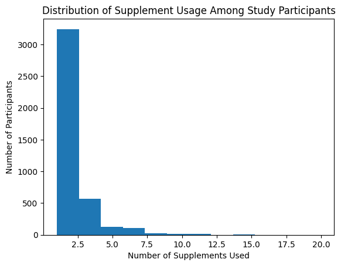
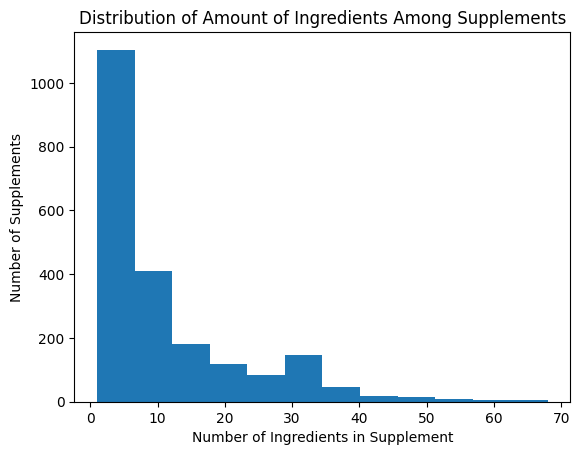
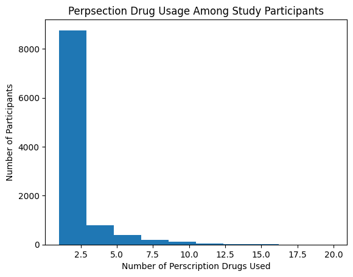
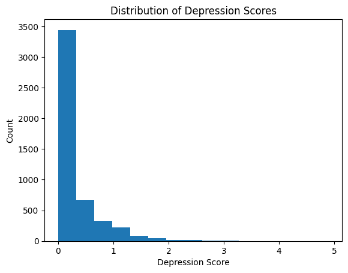

import os
import pandas as pd8 Data Pre-Processing
Want to see if each data set contains the seqn number and data release number
import os
import pandas as pd
data_master = "ICPSR_25504\\"
dataframes = []
index = []
i = 0
os.listdir(data_master)
for root, dirs, files in os.walk(data_master):
for name in files:
if name.endswith(".tsv"):
file = os.path.join(root, name)
dataframes.append(pd.read_csv(file, sep = "\t", nrows = 100))
index.append(root[-6:])
dataframes = pd.Series(dataframes, index = index)FileNotFoundError: [Errno 2] No such file or directory: 'ICPSR_25504\\'num_seqn = 0
num_SDDSRVYR = 0
for i in dataframes.index:
df = dataframes[i]
if "SEQN" in df.columns:
num_seqn +=1
else:
print(i)
if "SDDSRVYR" in df.columns:
num_SDDSRVYR += 1
else:
print(i)DS0214
DS0214
DS0215
DS0215
DS0216
DS0216
DS0235
DS0235print(num_seqn/len(dataframes))
print(num_SDDSRVYR/len(dataframes))0.963302752293578
0.963302752293578Some dataframes don’t contain the Serial Number and the Data Release Number. Let’s investigate why this occurs.
8.1 DS0214
Dietary Supplement Use – Supplement Information
This data set stores dietary supplement information. The primary key to this dataset is the Supplement ID number. Let’s see if this is a foreign key in another dataset
for i in dataframes.index:
df = dataframes[i]
if "DSDSUPID" in df.columns:
print(i)DS0213
DS0214
DS0215The Supplement ID number (DSDSUPID) is the primary key in DS0214 and is a foreign key in DS0213
DS0213 is a dataset that contains the serial number and the data release number. DSO213 is Dietary Supplement Use – Participants Use of Supplement Let’s see how DSO213 is structured: Can one person be recorded taking multiple supplements? If so, what is the distribution of supplement usage in the same?
DS2013 = pd.read_csv("ICPSR_25504\\DS0213\\25504-0213-Data.tsv", sep = "\t")
supplement_usage = DS2013.groupby("SEQN").size().sort_values(ascending = False).reset_index(name="Count")
supplement_usage| SEQN | Count | |
|---|---|---|
| 0 | 34656 | 20 |
| 1 | 40551 | 19 |
| 2 | 37134 | 16 |
| 3 | 38637 | 16 |
| 4 | 37164 | 14 |
| ... | ... | ... |
| 4105 | 35518 | 1 |
| 4106 | 35522 | 1 |
| 4107 | 35524 | 1 |
| 4108 | 35525 | 1 |
| 4109 | 36307 | 1 |
4110 rows × 2 columns
import matplotlib.pyplot as plt
plt.hist(supplement_usage["Count"], bins = 12)
plt.xlabel("Number of Supplements Used")
plt.ylabel("Number of Participants")
plt.title("Distribution of Supplement Usage Among Study Participants")
plt.show()
A key thing to note is that a participant who is not using supplements is not included in this visualization. This analysis is only representative of a participant that uses one or multiple supplement(s)
Let’s look at the next dataset that does not contain the sequence number or data release number
8.2 DS0215
Dietary Supplement Use – Ingredient Information
The Supplement ID number (DSDSUPID) is also the primary key in DS0214 and is a foreign key in DS0213
Can a supplement have several ingredients and what is the distributions of number ingredients in a supplements
DS2015 = pd.read_csv("ICPSR_25504\\DS0215\\25504-0215-Data.tsv", sep = "\t")
num_ingredients = DS2015.groupby("DSDSUPP").size().sort_values(ascending = False).reset_index(name="Count")
num_ingredients| DSDSUPP | Count | |
|---|---|---|
| 0 | S1000579801 | 68 |
| 1 | S1000579800 | 65 |
| 2 | S1000580200 | 65 |
| 3 | S1000600500 | 65 |
| 4 | S1000582500 | 64 |
| ... | ... | ... |
| 2138 | S1000649000 | 1 |
| 2139 | S1000649100 | 1 |
| 2140 | S1000649200 | 1 |
| 2141 | S1000649300 | 1 |
| 2142 | S1888690300 | 1 |
2143 rows × 2 columns
import matplotlib.pyplot as plt
plt.hist(num_ingredients["Count"], bins = 12)
plt.xlabel("Number of Ingredients in Supplement")
plt.ylabel("Number of Supplements")
plt.title("Distribution of Amount of Ingredients Among Supplements")
plt.show()
DS2015[DS2015["DSDSUPP"]=="S1000579801"]| DSDSUPID | DSDSUPP | DSDINGID | DSDINGR | DSDOPER | DSDQTY | DSDUNIT | DSDCAT | DSDBLFLG | |
|---|---|---|---|---|---|---|---|---|---|
| 11661 | 1000579801 | S1000579801 | 10000037 | I10000037 | = | 100.0 | 1 | 4 | 2 |
| 11662 | 1000579801 | S1000579801 | 10000038 | I10000038 | = | 50.0 | 1 | 4 | 2 |
| 11663 | 1000579801 | S1000579801 | 10000042 | I10000042 | = | 150.0 | 4 | 1 | 2 |
| 11664 | 1000579801 | S1000579801 | 10000052 | I10000052 | = | 1.5 | 1 | 2 | 2 |
| 11665 | 1000579801 | S1000579801 | 10000070 | I10000070 | = | 250.0 | 1 | 2 | 2 |
| ... | ... | ... | ... | ... | ... | ... | ... | ... | ... |
| 11724 | 1000579801 | S1000579801 | 10004592 | I10004592 | = | 400.0 | 1 | 4 | 2 |
| 11725 | 1000579801 | S1000579801 | 10004593 | I10004593 | = | 100.0 | 1 | 4 | 2 |
| 11726 | 1000579801 | S1000579801 | 10004595 | I10004595 | = | 100.0 | 1 | 4 | 2 |
| 11727 | 1000579801 | S1000579801 | 10004927 | I10004927 | = | 15.0 | 1 | 3 | 2 |
| 11728 | 1000579801 | S1000579801 | 10004928 | I10004928 | = | 125.0 | 1 | 4 | 2 |
68 rows × 9 columns
8.3 DS0216
Dietary Supplement Use – Supplement Blend
The primary key in DS0216 is the Ingredient ID number which is a foreign key in DS0215
8.4 DS0235
Drug Information
The primary key for DS0235 is the Generic Drug Code (RXDDRGID). Let’s find which dataset has the generic drug code as a foreign key.
for i in dataframes.index:
df = dataframes[i]
if "RXDDRGID" in df.columns:
print(i)DS0234
DS0235DS0234 contains RXDDRGID as a foreign key. This dataset is Prescription Medications
DS2034 = pd.read_csv("ICPSR_25504\\DS0234\\25504-0234-Data.tsv", sep = "\t")
num_drugs = DS2034.groupby("SEQN").size().sort_values(ascending = False).reset_index(name="Count")
num_drugs| SEQN | Count | |
|---|---|---|
| 0 | 41025 | 20 |
| 1 | 34531 | 18 |
| 2 | 34423 | 17 |
| 3 | 38612 | 16 |
| 4 | 33959 | 16 |
| ... | ... | ... |
| 10343 | 34985 | 1 |
| 10344 | 34984 | 1 |
| 10345 | 34983 | 1 |
| 10346 | 34982 | 1 |
| 10347 | 36301 | 1 |
10348 rows × 2 columns
# Partipicant 41025 uses 20 perscription drugs
DS2034[DS2034["SEQN"] == 41025]| SEQN | RXDUSE | RXDDRUG | RXDDRGID | RXQSEEN | RXDDAYS | RXDCOUNT | SDDSRVYR | RIDSTATR | RIDEXMON | ... | FIAPROXY | FIAINTRP | MIALANG | MIAPROXY | MIAINTRP | AIALANG | WTINT2YR | WTMEC2YR | SDMVPSU | SDMVSTRA | |
|---|---|---|---|---|---|---|---|---|---|---|---|---|---|---|---|---|---|---|---|---|---|
| 17125 | 41025 | 1 | ACETAMINOPHEN; HYDROCODONE | d03428 | 1 | 1825 | 20 | 4 | 2 | 2 | ... | 2 | 2 | 1 | 2 | 2 | 1 | 98473.732756 | 100919.498403 | 2 | 47 |
| 17126 | 41025 | 1 | AZELASTINE NASAL | d04068 | 1 | 182 | 20 | 4 | 2 | 2 | ... | 2 | 2 | 1 | 2 | 2 | 1 | 98473.732756 | 100919.498403 | 2 | 47 |
| 17127 | 41025 | 1 | BUSPIRONE | d00182 | 1 | 122 | 20 | 4 | 2 | 2 | ... | 2 | 2 | 1 | 2 | 2 | 1 | 98473.732756 | 100919.498403 | 2 | 47 |
| 17128 | 41025 | 1 | CHOLESTYRAMINE | d00193 | 1 | 547 | 20 | 4 | 2 | 2 | ... | 2 | 2 | 1 | 2 | 2 | 1 | 98473.732756 | 100919.498403 | 2 | 47 |
| 17129 | 41025 | 1 | CITALOPRAM | d04332 | 1 | 243 | 20 | 4 | 2 | 2 | ... | 2 | 2 | 1 | 2 | 2 | 1 | 98473.732756 | 100919.498403 | 2 | 47 |
| 17130 | 41025 | 1 | DILTIAZEM | d00045 | 1 | 365 | 20 | 4 | 2 | 2 | ... | 2 | 2 | 1 | 2 | 2 | 1 | 98473.732756 | 100919.498403 | 2 | 47 |
| 17131 | 41025 | 1 | ESOMEPRAZOLE | d04749 | 1 | 730 | 20 | 4 | 2 | 2 | ... | 2 | 2 | 1 | 2 | 2 | 1 | 98473.732756 | 100919.498403 | 2 | 47 |
| 17132 | 41025 | 1 | FLUTICASONE | d01296 | 1 | 1825 | 20 | 4 | 2 | 2 | ... | 2 | 2 | 1 | 2 | 2 | 1 | 98473.732756 | 100919.498403 | 2 | 47 |
| 17133 | 41025 | 1 | FLUTICASONE; SALMETEROL | d04611 | 1 | 1095 | 20 | 4 | 2 | 2 | ... | 2 | 2 | 1 | 2 | 2 | 1 | 98473.732756 | 100919.498403 | 2 | 47 |
| 17134 | 41025 | 1 | GABAPENTIN | d03182 | 1 | 730 | 20 | 4 | 2 | 2 | ... | 2 | 2 | 1 | 2 | 2 | 1 | 98473.732756 | 100919.498403 | 2 | 47 |
| 17135 | 41025 | 1 | GUAIFENESIN; PSEUDOEPHEDRINE | d03379 | 1 | 730 | 20 | 4 | 2 | 2 | ... | 2 | 2 | 1 | 2 | 2 | 1 | 98473.732756 | 100919.498403 | 2 | 47 |
| 17136 | 41025 | 1 | LORAZEPAM | d00149 | 1 | 365 | 20 | 4 | 2 | 2 | ... | 2 | 2 | 1 | 2 | 2 | 1 | 98473.732756 | 100919.498403 | 2 | 47 |
| 17137 | 41025 | 1 | METAXALONE | d00964 | 1 | 1460 | 20 | 4 | 2 | 2 | ... | 2 | 2 | 1 | 2 | 2 | 1 | 98473.732756 | 100919.498403 | 2 | 47 |
| 17138 | 41025 | 1 | NABUMETONE | d00310 | 1 | 243 | 20 | 4 | 2 | 2 | ... | 2 | 2 | 1 | 2 | 2 | 1 | 98473.732756 | 100919.498403 | 2 | 47 |
| 17139 | 41025 | 1 | OXYBUTYNIN | d00328 | 1 | 730 | 20 | 4 | 2 | 2 | ... | 2 | 2 | 1 | 2 | 2 | 1 | 98473.732756 | 100919.498403 | 2 | 47 |
| 17140 | 41025 | 1 | OXYCODONE | d00329 | 1 | 1825 | 20 | 4 | 2 | 2 | ... | 2 | 2 | 1 | 2 | 2 | 1 | 98473.732756 | 100919.498403 | 2 | 47 |
| 17141 | 41025 | 1 | QUININE | d00366 | 1 | 10950 | 20 | 4 | 2 | 2 | ... | 2 | 2 | 1 | 2 | 2 | 1 | 98473.732756 | 100919.498403 | 2 | 47 |
| 17142 | 41025 | 1 | SUMATRIPTAN | d03160 | 1 | 1825 | 20 | 4 | 2 | 2 | ... | 2 | 2 | 1 | 2 | 2 | 1 | 98473.732756 | 100919.498403 | 2 | 47 |
| 17143 | 41025 | 1 | TAMSULOSIN | d04121 | 1 | 730 | 20 | 4 | 2 | 2 | ... | 2 | 2 | 1 | 2 | 2 | 1 | 98473.732756 | 100919.498403 | 2 | 47 |
| 17144 | 41025 | 1 | TRAZODONE | d00395 | 1 | 365 | 20 | 4 | 2 | 2 | ... | 2 | 2 | 1 | 2 | 2 | 1 | 98473.732756 | 100919.498403 | 2 | 47 |
20 rows × 49 columns
import matplotlib.pyplot as plt
plt.hist(num_drugs["Count"], bins = 10)
plt.xlabel("Number of Perscription Drugs Used")
plt.ylabel("Number of Participants")
plt.title("Perpsection Drug Usage Among Study Participants")
plt.show()
8.5 Year to Year Survey Data Consistency
The first data that we have been working with from the dataset ICPSR_25504 is the National Health and Nutrition Examination Survey (NHANES) from 2005-2006. Next we have downloaded the Survey from 2005-2006 and we will look to see if the data architecture is consistent across year.
First let’s check if each data set exists in both surveys and if their columns are the same
import os
import pandas as pd
data_master = "ICPSR_25505\\"
dataframes2 = []
index2 = []
i = 0
os.listdir(data_master)
for root, dirs, files in os.walk(data_master):
for name in files:
if name.endswith(".tsv"):
file = os.path.join(root, name)
dataframes2.append(pd.read_csv(file, sep = "\t", nrows = 100))
index2.append(root[-6:])
dataframes2 = pd.Series(dataframes2, index = index2)print("Datasets included in 2005-2006 but not in 2007-2008")
for i in index:
if i not in index2:
print(i)
print("Datasets not included in 2005-2006 but in 2007-2008")
for i in index2:
if i not in index:
print(i)
print("Datasets with mismatching columns")
for i in index:
if i in index2:
if len(dataframes[i].columns) != len(dataframes2[i].columns):
print(i)
print("Datasets with consistent number of columns")
for i in index:
if i in index2:
if len(dataframes[i].columns) == len(dataframes2[i].columns):
print(i)
Datasets included in 2005-2006 but not in 2007-2008
DS0018
DS0019
DS0020
DS0021
DS0022
DS0023
DS0024
DS0025
DS0026
DS0128
DS0129
DS0130
DS0131
DS0132
DS0133
DS0134
DS0135
DS0136
DS0137
DS0138
DS0139
DS0140
DS0141
DS0142
DS0143
DS0144
DS0234
DS0235
DS0236
DS0237
DS0238
DS0239
DS0240
DS0241
DS0242
DS0243
DS0244
DS0245
DS0246
DS0247
DS0248
Datasets not included in 2005-2006 but in 2007-2008
DS0100
Datasets with mismatching columns
DS0011
DS0012
DS0013
DS0014
DS0015
DS0016
DS0017
DS0101
DS0102
DS0103
DS0104
DS0105
DS0106
DS0107
DS0108
DS0109
DS0110
DS0111
DS0113
DS0114
DS0115
DS0116
DS0117
DS0118
DS0119
DS0120
DS0121
DS0122
DS0123
DS0124
DS0125
DS0126
DS0127
DS0203
DS0204
DS0206
DS0207
DS0208
DS0209
DS0210
DS0211
DS0212
DS0214
DS0215
DS0216
DS0217
DS0218
DS0219
DS0220
DS0221
DS0222
DS0223
DS0224
DS0225
DS0226
DS0227
DS0228
DS0229
DS0230
DS0231
DS0232
DS0233
Datasets with consistent number of columns
DS0001
DS0112
DS0201
DS0202
DS0205
DS0213name = "DS0001"
i=0
while i < len(dataframes[name].columns):
if dataframes[name].columns[i] in dataframes2[name].columns:
i += 1
else:
break
if i == len(dataframes[name].columns):
print("True")
else:
print("False")Falsedataframes[name].columns,dataframes2[name].columns(Index(['SEQN', 'SDDSRVYR', 'RIDSTATR', 'RIDEXMON', 'RIAGENDR', 'RIDAGEYR',
'RIDAGEMN', 'RIDAGEEX', 'RIDRETH1', 'DMQMILIT', 'DMDBORN', 'DMDCITZN',
'DMDYRSUS', 'DMDEDUC3', 'DMDEDUC2', 'DMDSCHOL', 'DMDMARTL', 'DMDHHSIZ',
'DMDFMSIZ', 'INDHHINC', 'INDFMINC', 'INDFMPIR', 'RIDEXPRG', 'DMDHRGND',
'DMDHRAGE', 'DMDHRBRN', 'DMDHREDU', 'DMDHRMAR', 'DMDHSEDU', 'SIALANG',
'SIAPROXY', 'SIAINTRP', 'FIALANG', 'FIAPROXY', 'FIAINTRP', 'MIALANG',
'MIAPROXY', 'MIAINTRP', 'AIALANG', 'WTINT2YR', 'WTMEC2YR', 'SDMVPSU',
'SDMVSTRA'],
dtype='object'),
Index(['SEQN', 'SDDSRVYR', 'RIDSTATR', 'RIDEXMON', 'RIAGENDR', 'RIDAGEYR',
'RIDAGEMN', 'RIDAGEEX', 'RIDRETH1', 'DMQMILIT', 'DMDBORN2', 'DMDCITZN',
'DMDYRSUS', 'DMDEDUC3', 'DMDEDUC2', 'DMDSCHOL', 'DMDMARTL', 'DMDHHSIZ',
'DMDFMSIZ', 'INDHHIN2', 'INDFMIN2', 'INDFMPIR', 'RIDEXPRG', 'DMDHRGND',
'DMDHRAGE', 'DMDHRBR2', 'DMDHREDU', 'DMDHRMAR', 'DMDHSEDU', 'SIALANG',
'SIAPROXY', 'SIAINTRP', 'FIALANG', 'FIAPROXY', 'FIAINTRP', 'MIALANG',
'MIAPROXY', 'MIAINTRP', 'AIALANG', 'WTINT2YR', 'WTMEC2YR', 'SDMVPSU',
'SDMVSTRA'],
dtype='object'))Columns are almost identical aside from DMDBORN and DMDBORN2
Let’s see how many participants we have from both surveys
ICPSR_25504 = pd.read_csv("ICPSR_25504\\DS0001\\25504-0001-Data.tsv", sep = "\t")
ICPSR_25505 = pd.read_csv("ICPSR_25505\\DS0001\\25505-0001-Data.tsv", sep = "\t")
ICPSR_25504["SEQN"].apply(lambda x: x in ICPSR_25505["SEQN"].values).sum()0There is no way of identifying previous participants in new surverys. There also seems to be little value in analyzing multiple surveys because we can’t create variables that look at year to year changes in the same patient and the data architecture is not consistent across years. The only potential uses of having surveys from different years is to see if a model built on data from one year generalizes to the survey data from other years. In order to do some we must choose variables and datasets that exist in all surveys.
8.6 Joining Datasets
import pandas as pd
DS0132= pd.read_csv("ICPSR_25504\\DS0132\\25504-0132-Data.tsv", sep = "\t")
DS0123 = pd.read_csv("ICPSR_25504\\DS0123\\25504-0123-Data.tsv", sep = "\t")
joined = DS0132.set_index("SEQN").join(DS0123.set_index("SEQN"), lsuffix="_DS0132", rsuffix="_DS0123")joined| WTSAF2YR_DS0132 | LBXTR | LBDTRSI | LBDLDL | LBDLDLSI | LBXAPB | LBDAPBSI | SDDSRVYR_DS0132 | RIDSTATR_DS0132 | RIDEXMON_DS0132 | ... | FIAPROXY_DS0123 | FIAINTRP_DS0123 | MIALANG_DS0123 | MIAPROXY_DS0123 | MIAINTRP_DS0123 | AIALANG_DS0123 | WTINT2YR_DS0123 | WTMEC2YR_DS0123 | SDMVPSU_DS0123 | SDMVSTRA_DS0123 | |
|---|---|---|---|---|---|---|---|---|---|---|---|---|---|---|---|---|---|---|---|---|---|
| SEQN | |||||||||||||||||||||
| 31130 | 0.000 | 4 | 2 | 2 | ... | 2 | 2 | 29960.839509 | 34030.994786 | 2 | 46 | ||||||||||
| 31131 | 67556.810 | 86 | .971 | 49 | 1.267 | 50 | .5 | 4 | 2 | 2 | ... | 2 | 2 | 1 | 2 | 2 | 1 | 26457.708180 | 26770.584605 | 1 | 48 |
| 31132 | 80193.962 | 65 | .734 | 75 | 1.94 | 75 | .75 | 4 | 2 | 2 | ... | 2 | 2 | 1 | 2 | 2 | 1 | 32961.509920 | 35315.538900 | 2 | 52 |
| 31133 | 15668.017 | 61 | .689 | 81 | 2.095 | 75 | .75 | 4 | 2 | 2 | ... | 2 | 2 | 1 | 2 | 2 | 1 | 5635.221296 | 5920.617679 | 1 | 51 |
| 31134 | 93399.539 | 195 | 2.202 | 98 | 2.534 | 111 | 1.11 | 4 | 2 | 2 | ... | 2 | 2 | 1 | 2 | 2 | 1 | 43718.506372 | 44231.167252 | 2 | 48 |
| ... | ... | ... | ... | ... | ... | ... | ... | ... | ... | ... | ... | ... | ... | ... | ... | ... | ... | ... | ... | ... | ... |
| 41465 | 21859.428 | 81 | .914 | 96 | 2.483 | 84 | .84 | 4 | 2 | 1 | ... | 2 | 2 | 1 | 2 | 2 | 1 | 6659.491266 | 6975.174925 | 1 | 49 |
| 41467 | 8000.729 | 69 | .779 | 80 | 2.069 | 75 | .75 | 4 | 2 | 2 | ... | 2 | 2 | 1 | 2 | 2 | 1 | 3623.884248 | 3780.835721 | 2 | 56 |
| 41471 | 16274.316 | 89 | 1.005 | 72 | 1.862 | 60 | .6 | 4 | 2 | 1 | ... | 2 | 2 | 1 | 2 | 2 | 1 | 6283.305550 | 6602.173657 | 1 | 52 |
| 41472 | 175395.280 | 120 | 1.355 | 86 | 2.224 | 91 | .91 | 4 | 2 | 2 | ... | 2 | 2 | 1 | 2 | 2 | 1 | 67347.579152 | 69747.141506 | 1 | 48 |
| 41474 | 17122.983 | 88 | .994 | 35 | .905 | 37 | .37 | 4 | 2 | 2 | ... | 2 | 2 | 1 | 2 | 2 | 1 | 6174.551667 | 6487.262494 | 1 | 47 |
3352 rows × 98 columns
Let’s see if the columns that occur in both dataframes are redundant
(joined["AIALANG_DS0123"] == joined["AIALANG_DS0132"]).mean()
# AIALANG is definitely redundant1.0DS1 = "DS0123"
DS2 = "DS0132"
n = 0
total = 0
for column in joined.columns:
if "_" in column:
total +=1
original = column.split("_")[0]
n1 = original + "_" + DS1
n2 = original + "_" + DS2
if (joined[n1]==joined[n2]).mean() == 1:
n += 1
joined.drop(n2, axis = 1)
print(str(n/total) + " of the columns that occur in both datasets are redundant")
1.0 of the columns that occur in both datasets are redundantimport os
import pandas as pd
data_master = "ICPSR_25504\\"
i = 0
joined_master = DS0123.set_index("SEQN")
for root, dirs, files in os.walk(data_master):
for name in files:
if name.endswith(".tsv"):
file = os.path.join(root, name)
df = pd.read_csv(file, sep = "\t")
if "SEQN" not in df.columns:
continue
name = root[-6:]
new_columns = df.columns.difference(joined_master.columns)
# try:
joined_master = joined_master.join(df.loc[:,new_columns].set_index("SEQN"),how="left",lsuffix="_master", rsuffix="_"+name)
# except:
# print(name)
# n = 0
# total = 0
# for column in joined_master.columns:
# if "_" in column:
# print(column, name)
# total +=1
# original = column.split("_")[0]
# n1 = original + "_master"
# n2 = original + "_" + name
# if n2 not in joined_master.columns:
# continue
# if (joined_master[n1]==joined_master[n2]).mean() == 1:
# n += 1
# joined_master.drop(n2, axis = 1)
# joined_master.rename({n1:original})
# if n/total != 1:
# print(name + " - not redundant")
MemoryError: Unable to allocate 1.30 GiB for an array with shape (222, 786976) and data type float64joined_master| WTSAF2YR | LBXGLU | LBDGLUSI | LBXIN | LBDINSI | PHAFSTHR | PHAFSTMN | SDDSRVYR | RIDSTATR | RIDEXMON | ... | DXXNKBMD | DXXOFA | DXXOFBMC | DXXOFBMD | DXXTRA | DXXTRBMC | DXXTRBMD | DXXWDA | DXXWDBMC | DXXWDBMD | |
|---|---|---|---|---|---|---|---|---|---|---|---|---|---|---|---|---|---|---|---|---|---|
| SEQN | |||||||||||||||||||||
| 31130 | 0.000 | 10 | 3 | 4 | 2 | 2 | ... | ||||||||||||||
| 31131 | 67556.810 | 90 | 4.996 | 10.03 | 60.18 | 14 | 9 | 4 | 2 | 2 | ... | ||||||||||
| 31131 | 67556.810 | 90 | 4.996 | 10.03 | 60.18 | 14 | 9 | 4 | 2 | 2 | ... | ||||||||||
| 31131 | 67556.810 | 90 | 4.996 | 10.03 | 60.18 | 14 | 9 | 4 | 2 | 2 | ... | ||||||||||
| 31131 | 67556.810 | 90 | 4.996 | 10.03 | 60.18 | 14 | 9 | 4 | 2 | 2 | ... | ||||||||||
| ... | ... | ... | ... | ... | ... | ... | ... | ... | ... | ... | ... | ... | ... | ... | ... | ... | ... | ... | ... | ... | ... |
| 41474 | 17122.983 | 93 | 5.162 | 20.12 | 120.72 | 9 | 39 | 4 | 2 | 2 | ... | .825 | 38.34 | 30.73 | .802 | 12.1 | 6.63 | .548 | 1.3 | .96 | .736 |
| 41474 | 17122.983 | 93 | 5.162 | 20.12 | 120.72 | 9 | 39 | 4 | 2 | 2 | ... | .825 | 38.34 | 30.73 | .802 | 12.1 | 6.63 | .548 | 1.3 | .96 | .736 |
| 41474 | 17122.983 | 93 | 5.162 | 20.12 | 120.72 | 9 | 39 | 4 | 2 | 2 | ... | .825 | 38.34 | 30.73 | .802 | 12.1 | 6.63 | .548 | 1.3 | .96 | .736 |
| 41474 | 17122.983 | 93 | 5.162 | 20.12 | 120.72 | 9 | 39 | 4 | 2 | 2 | ... | .825 | 38.34 | 30.73 | .802 | 12.1 | 6.63 | .548 | 1.3 | .96 | .736 |
| 41474 | 17122.983 | 93 | 5.162 | 20.12 | 120.72 | 9 | 39 | 4 | 2 | 2 | ... | .825 | 38.34 | 30.73 | .802 | 12.1 | 6.63 | .548 | 1.3 | .96 | .736 |
786976 rows × 742 columns
# The data is far too large to combine into one so I will choose critical datasets to focus the analysis on8.7 DS209 - Depression Screener
This data set is a Questionnaire with 10 questions about depressive symptoms (Eg. Thought you would be better off dead.) The response are categorical from 0-3 with 0 being non-depressive behaviour (Not at all) and 4 being depressive behaviour (Nearly every day).
We will create a target variable that aggregate the results of these questions, taking the mean response of the questions which scores a participants depressive state. 0 meaning low, 4 high
The respondant can answer a question as “Don’t know” and will be assigned the number 9 which can throw off our scores. I will remove these values from the average calculations. So for example, if a respondant answers “Don’t know” for 2 questions, their score will be the average of their repsonses to the other 8 questions.
DS209= pd.read_csv(os.path.dirname(os.path.dirname(os.getcwd()))+"\\Data\\NHANES\\ICPSR_25504\DS0209\\25504-0209-Data.tsv", sep = "\t")DS209.dtypesSEQN int64
DPQ010 object
DPQ020 object
DPQ030 object
DPQ040 object
DPQ050 object
DPQ060 object
DPQ070 object
DPQ080 object
DPQ090 object
DPQ100 object
SDDSRVYR int64
RIDSTATR int64
RIDEXMON int64
RIAGENDR int64
RIDAGEYR int64
RIDAGEMN object
RIDAGEEX object
RIDRETH1 int64
DMQMILIT int64
DMDBORN int64
DMDCITZN int64
DMDYRSUS object
DMDEDUC3 object
DMDEDUC2 object
DMDSCHOL object
DMDMARTL int64
DMDHHSIZ int64
DMDFMSIZ int64
INDHHINC object
INDFMINC object
INDFMPIR object
RIDEXPRG object
DMDHRGND int64
DMDHRAGE int64
DMDHRBRN object
DMDHREDU object
DMDHRMAR object
DMDHSEDU object
SIALANG object
SIAPROXY object
SIAINTRP object
FIALANG object
FIAPROXY object
FIAINTRP object
MIALANG object
MIAPROXY object
MIAINTRP object
AIALANG object
WTINT2YR float64
WTMEC2YR float64
SDMVPSU int64
SDMVSTRA int64
dtype: objectWe need to turn some columns into integer
import numpy as np
DS209 = DS209.replace(" ", np.NaN )DS209[DS209.columns[1:11]]
convert_dict = {}
for column in DS209.columns[1:11]:
DS209[column] = pd.to_numeric(DS209[column], errors='coerce')
print(DS209.dtypes)SEQN int64
DPQ010 float64
DPQ020 float64
DPQ030 float64
DPQ040 float64
DPQ050 float64
DPQ060 float64
DPQ070 float64
DPQ080 float64
DPQ090 float64
DPQ100 float64
SDDSRVYR int64
RIDSTATR int64
RIDEXMON int64
RIAGENDR int64
RIDAGEYR int64
RIDAGEMN object
RIDAGEEX object
RIDRETH1 int64
DMQMILIT int64
DMDBORN int64
DMDCITZN int64
DMDYRSUS object
DMDEDUC3 object
DMDEDUC2 object
DMDSCHOL object
DMDMARTL int64
DMDHHSIZ int64
DMDFMSIZ int64
INDHHINC object
INDFMINC object
INDFMPIR object
RIDEXPRG object
DMDHRGND int64
DMDHRAGE int64
DMDHRBRN object
DMDHREDU object
DMDHRMAR object
DMDHSEDU object
SIALANG object
SIAPROXY object
SIAINTRP object
FIALANG object
FIAPROXY object
FIAINTRP object
MIALANG object
MIAPROXY object
MIAINTRP object
AIALANG object
WTINT2YR float64
WTMEC2YR float64
SDMVPSU int64
SDMVSTRA int64
dtype: object(DS209.iloc[:, 1:11].isna().mean(axis = 1) == 1).sum()498498 participants did not respond at all. Let’s remove these from the dataset
clean = DS209[DS209.iloc[:, 1:11].isnull().mean(axis = 1) != 1]depression_score = clean.iloc[:, 1:11].mean(axis = 1)final = pd.concat([clean, depression_score], axis = 1).rename(columns = {0:"DepressionScore"}).set_index("SEQN")8.8 Distribution of target variable
final["DepressionScore"].describe()count 4836.000000
mean 0.306493
std 0.437908
min 0.000000
25% 0.000000
50% 0.100000
75% 0.400000
max 4.900000
Name: DepressionScore, dtype: float64import matplotlib.pyplot as plt
from math import log
plt.hist(final["DepressionScore"], bins = 15)
plt.title("Distribution of Depression Scores")
plt.xlabel("Depression Score")
plt.ylabel("Count")
plt.show()
final.to_csv(os.path.dirname(os.path.dirname(os.getcwd()))+"/Data/NHANES/depression_table.csv")